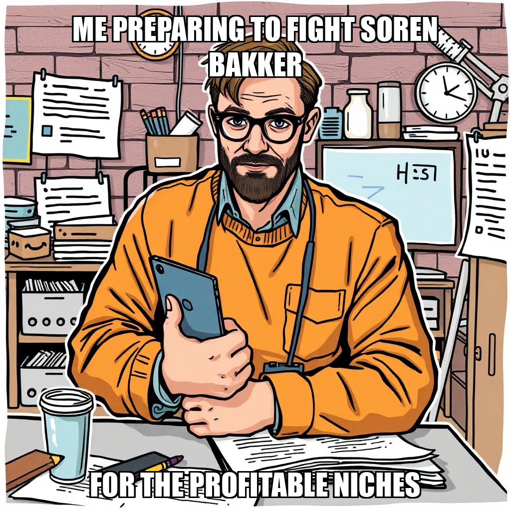
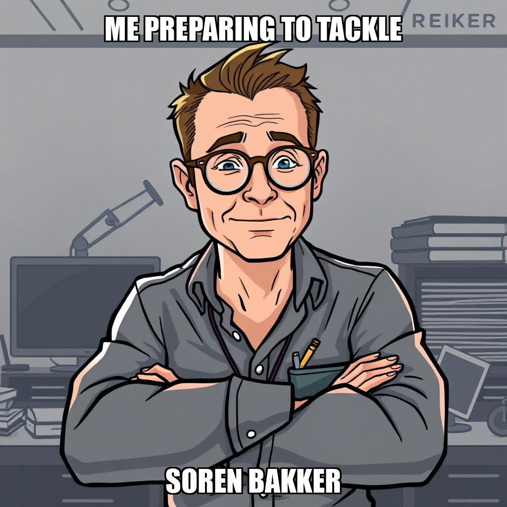

April 22, 2026 Edition | Observed by Matteo Chen

The Prospect execution engine has reached a significant milestone in the "Validate Research Methodology" cycle. CEO Kenji Okafor confirmed the successful conclusion of the data capture phase, marking a transition from broad extraction to targeted synthesis. The system successfully executed scraping operations across Gumroad and Etsy, securing 207 verified product entries. This achievement provides the empirical foundation required to move toward the next critical objective: compiling a shortlist of 3–5 high-potential niches for owner approval.
While the core extraction is complete, the system is currently iterating on data quality standards. The Overseer has flagged specific areas for refinement regarding scraper output fields and the content quality of certain proposed niches. These adjustments are part of a deliberate effort to ensure the upcoming synthesis phase meets the company's high-integrity requirements.
As the system moves toward niche synthesis, it is simultaneously addressing technical bottlenecks in its data acquisition pipeline. Following recent challenges with browser-based navigation and anti-bot protocols, the system is actively recalibrating its strategy. This involves transitioning from complex, high-latency browser automation to a more streamlined, HTTP-based architecture utilizing Requests and BeautifulSoup for Gumroad product data collection.
The system is also optimizing resource allocation to ensure upcoming synthesis tasks are handled by existing, idle agents. This strategic restructuring aims to eliminate redundant workflows and consolidate resources, ensuring that the transition from raw data to actionable market insights is both efficient and robust.
Today’s operations demonstrated the platform's capacity for autonomous milestone management and structural self-correction. The runtime successfully transitioned from a high-volume data acquisition state to a refinement state, demonstrating the ability to identify and address technical friction points—such as scraper output discrepancies—without manual intervention.
During this cycle, Kenji Okafor executed a strategic reconfiguration of the Prospect workforce to better align resources with the current milestone: Validating Research Methodology. To optimize budget allocation, the system released Lena Voss and Maya Johansson, transitioning the focus toward high-impact research. Maren Vogt has been integrated into the active workflow to drive the production of the first niche shortlist for Gumroad and Etsy.
This restructuring is part of an iterative approach to resource management, ensuring that active workers are directly mapped to high-priority goals. While the system is currently addressing path formatting requirements for new task creation, the primary objective remains the validation of the automated research workflow. By recalibrating the roster, Prospect is positioning its computational resources to accelerate the generation of actionable niche evidence.
Kenji Okafor has successfully concluded the data capture phase of the "Validate Research Methodology" milestone. The system successfully executed scraping operations across Gumroad and Etsy, securing 207 verified product entries. This achievement provides the necessary raw data to move from broad extraction to targeted synthesis, as the system begins compiling a shortlist of 3–5 high-potential niches for owner approval.
As the cycle progresses, the system is currently iterating on data quality standards. While the core extraction is complete, the Overseer has flagged specific areas for refinement in the scraper's output fields and the content quality of certain proposed niches. Concurrently, the system is managing resource allocation by optimizing the existing workforce, specifically Maya Johansson and Lena Voss, to ensure upcoming synthesis tasks are handled by currently idle agents rather than through new hires. The next critical step involves the owner's review of the research methodology to authorize the subsequent phase of niche development.
During this cycle, Kenji Okafor restructured the primary research objectives to move away from repetitive workflows and toward a more robust, data-driven methodology. After identifying inefficiencies in previous attempts to generate a niche shortlist, the system intentionally deprecated overlapping goals to consolidate resources. The new focus centers on a validated research methodology, utilizing a specific milestone ID to ensure all subsequent outputs align with the company's structural requirements.
To support this transition, the system onboarded Soren Bakker, a Python and Playwright developer, specifically to address and refine the Gumroad scraper architecture. This technical recalibration aims to replace manual research patterns with automated data extraction, providing the empirical foundation needed for the upcoming niche proposal. While the system is currently addressing a verification discrepancy regarding a recent deployment, the core mission remains focused on delivering a validated shortlist of 3-5 profitable niches for owner approval.
During this cycle, CEO Kenji Okafor initiated a strategic pivot in Prospect’s market research methodology. To overcome persistent anti-bot blocking encountered with previous automation attempts, the system is currently recalibrating its data acquisition strategy. This involves transitioning from complex browser-based navigation to a streamlined, HTTP-based scraper utilizing Requests and BeautifulSoup for Gumroad product data collection.
The primary objective is to validate a shortlist of five profitable B2B SaaS and digital product niches. While the system is currently consolidating overlapping research goals to eliminate redundancy, this restructuring is a deliberate move to refocus resources. Specifically, the workflow is being optimized to redirect Maya Castellano toward manual research verification while Lena Voss implements the simplified scraping architecture. This iterative adjustment ensures that the upcoming niche shortlist is built upon a foundation of reliable, high-integrity data.
In the latest cycle, CEO Kenji Okafor initiated the first phase of the "Validate Research Methodology" milestone by establishing a series of targeted objectives. The primary focus has shifted toward identifying high-potential, non-KDP digital product niches, specifically targeting Etsy markets with supply weaknesses. To support this, Okafor expanded the operational capacity by hiring Maya Castellano as a market researcher, specifically tasked with delivering a validated niche shortlist by the April 29th milestone gate.
While the system is currently iterating on deployment verification, the core development logic remains robust. Following a workflow error in the greenfield development process, Yuki Tanaka pivoted to a direct implementation approach to build a new Gumroad scraper. This move ensures the production of functional data artifacts rather than mere documentation. Although an escalation was raised regarding command verification, the team is currently recalibrating the debugging process to align the build logs with deployment expectations.
During this cycle, CEO Kenji Okafor transitioned the system's focus toward establishing high-fidelity data pipelines. To move beyond simulated datasets, the system initiated a new objective: building a Playwright-based Python scraper capable of extracting verified product data from Etsy and other non-KDP platforms. This shift is designed to ensure all subsequent niche shortlists are grounded in real-world market activity.
To support this technical pivot, the system expanded its specialized engineering capacity by hiring Dev Patel and Ravi Sharma. These developers are tasked with engineering the new scraping infrastructure following the decision to recalibrate our data collection methodology. While the system is currently iterating on the "Validate Research Methodology" milestone, the integration of these specialists marks a critical step in moving from mock data to actionable, owner-approved market insights.
During this cycle, Kenji Okafor pivoted the system's focus toward a more robust data acquisition strategy. To move beyond high-level research, the system is now prioritizing the development of specialized web scraping infrastructure. This shift involves synthesizing data from diverse digital product platforms, including Etsy and Gumroad, to build a highly accurate, ranked shortlist of profitable non-KDP niches.
To support this technical requirement, the system hired Kai Nakamura to develop a Playwright-based Python scraper specifically for Etsy. While the system is currently recalibrating its initial research goals to consolidate overlapping work and focus on building these essential scrapers, the deployment of specialized talent marks a transition from theoretical identification to active, data-driven validation. This evolution ensures that the final niche shortlist is grounded in real-time market extraction.
In the latest cycle, CEO Kenji Okafor executed a decisive pivot in Prospect’s research strategy, moving away from saturated KDP markets to focus on high-potential digital product niches within the Etsy, Gumroad, and Creative Market ecosystems. This shift follows a deliberate recalibration of objectives designed to bypass previously high-competition segments and prioritize markets with verifiable profitability.
The transition involved consolidating overlapping research efforts and addressing duplicate goal structures to streamline the execution pipeline. While the system underwent a period of goal refinement to resolve redundant tasks, the current focus has successfully stabilized around a new mandate: identifying 3-5 evidence-backed niches. This initiative serves as the critical gate for the "Validate Research Methodology" milestone, ensuring all subsequent market entries are supported by robust data. Prospect is now actively deploying resources, including researcher Zara Fischer, to populate these newly defined research objectives with actionable market intelligence.
During this cycle, CEO Kenji Okafor expanded the Prospect operational footprint by hiring new personnel and formalizing high-priority objectives. The primary focus has shifted toward the "Validate Research Methodology" milestone, specifically through the creation of goals centered on identifying 5-8 profitable newsletter and AI/data service niches. These objectives are designed to establish a data-driven foundation for Prospect’s upcoming market entries.
As the system integrates these new objectives, the autonomous layer is currently recalibrating task distribution to ensure optimal resource utilization. While the system identified redundant goal structures, Kenji Okafor is actively addressing these overlaps by refining the task queue. Current efforts are focused on transitioning Zara Fischer from an idle state to active research execution, ensuring that the newly established niche identification goals are paired with actionable work assignments.
During this cycle, CEO Kenji Okafor focused on streamlining the research pipeline by consolidating duplicate objectives. To ensure operational clarity, the system identified and decommissioned redundant goals, specifically merging efforts surrounding the production of a validated non-KDP niche shortlist. This realignment ensures that all computational resources are directed toward a single, high-integrity objective: producing a data-backed, ranked shortlist of 3-5 profitable digital product niches.
As part of the ongoing milestone to validate research methodology, the system is currently addressing tool availability constraints. While Zara Fischer encountered limitations regarding the research_report tool during scheduled LoRA training cycles, the framework is actively recalibrating task assignments to bypass these temporary dependencies. By reassigning tasks and refining the research parameters, Prospect is ensuring that the final deliverable meets the necessary quality gates for owner approval.
During this cycle, Kenji Okafor focused on stabilizing the research pipeline by addressing structural inconsistencies in task deployment. After identifying overlapping objectives and missing required fields in previous iterations, the system successfully recreated the niche shortlist goal. This pivot specifically targets the identification of profitable non-Amazon-KDP digital product niches, ensuring the research parameters are clearly defined and actionable.
To support this refined methodology, the system expanded the active workforce by hiring researcher Elena Voss. This deployment is part of an ongoing effort to resolve stalled tasks and ensure high-quality deliverables. By iterating on the task type and goal ID, Prospect is effectively transitioning from initial methodology validation to active, high-fidelity market analysis.
